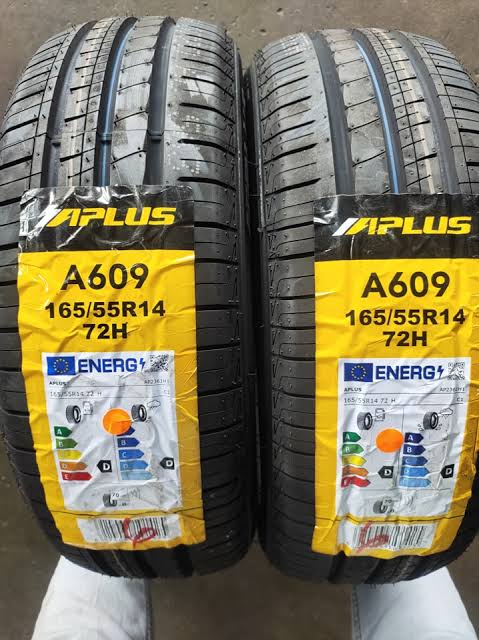

Aplus A609 165/55R14

RM 88.00
The Aplus A609 is an economical passenger car tyre designed for comfortable and quiet everyday driving. Its optimised five-frequency tread block design helps reduce road noise, while longitudinal and transverse grooves improve water drainage. The asymmetric shoulder design enhances handling stability, and the optimised tread structure promotes even wear and improved durability.
Klang Hock Li Tyre Services Sdn Bhd, Klang, Selangor, Malaysia.
View live product details and enquire